Nothing was ever blue enough
On the first day of spring, Bram the bowerbird found a blue feather. But was it the best?
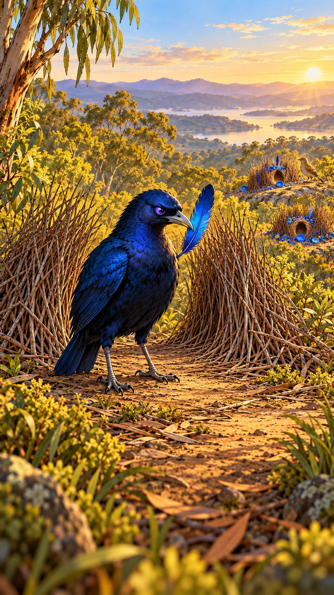
He tossed it. A bottle cap: bluer. A butterfly wing: bluer still.
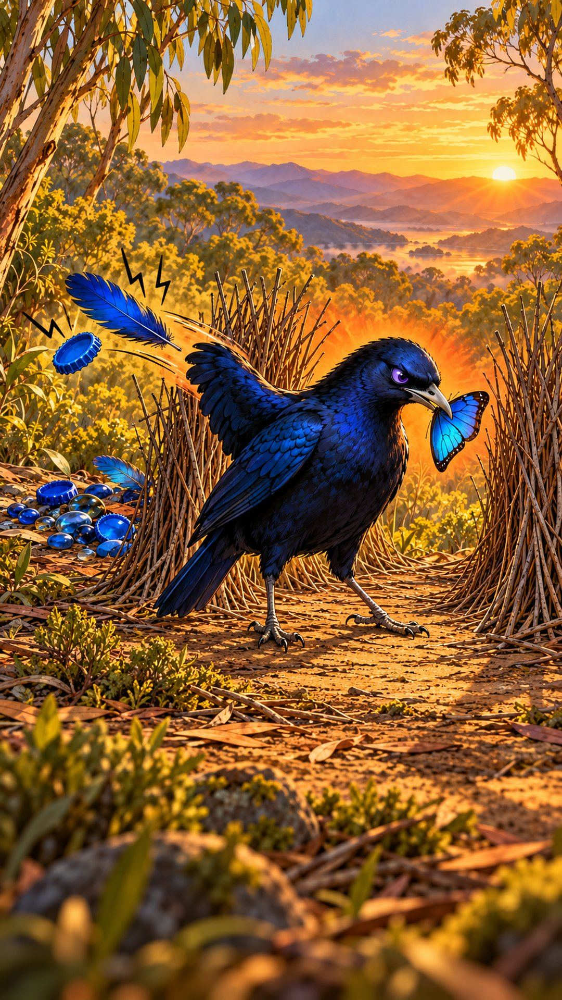
An eggshell: not quite.
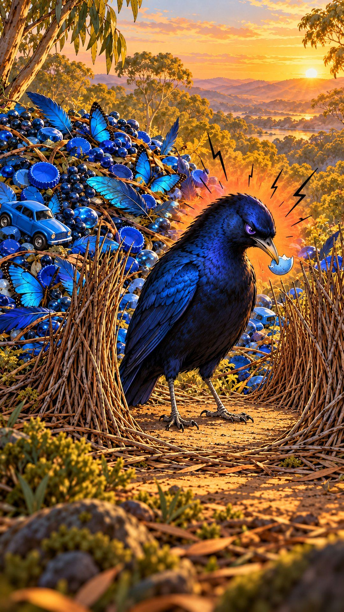
Next door, Pip took the first blue berry he found. Done by noon.
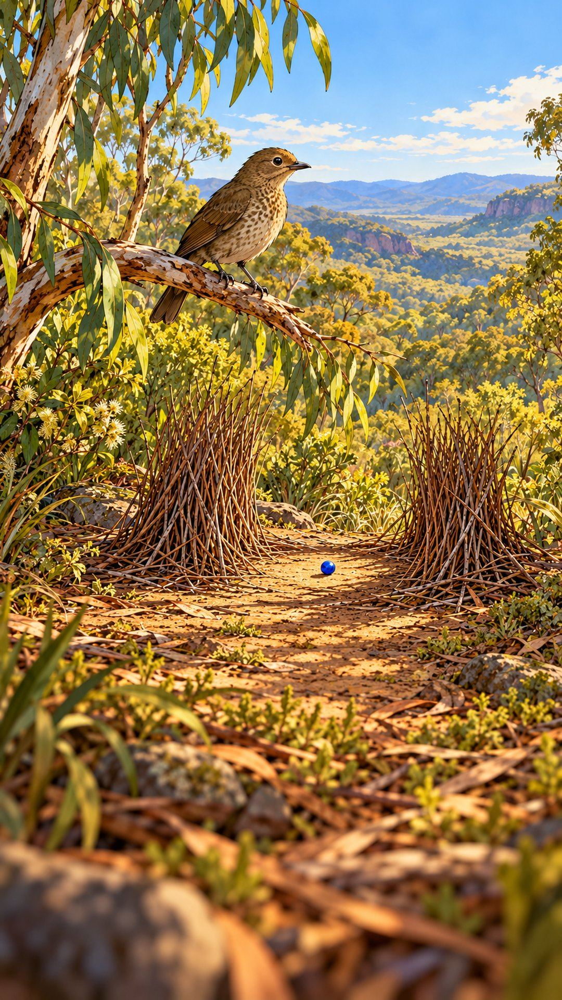
Weeks later, Bram’s pile of “not quite” stood taller than his bower.
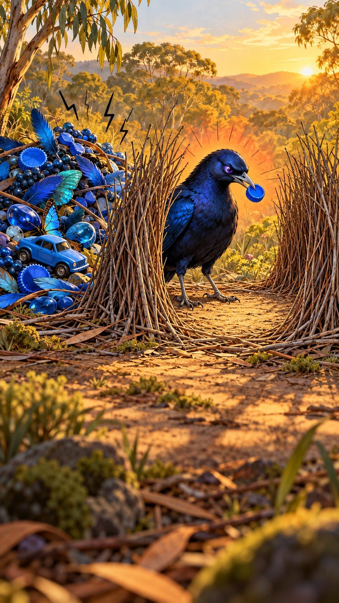
Then he found it: the bluest marble in the forest. His bower was finally perfect.
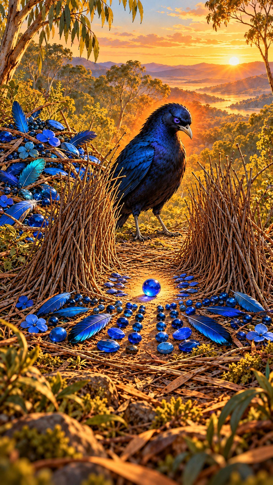
That morning, a female landed at his bower. Then, across the valley, something glinted.
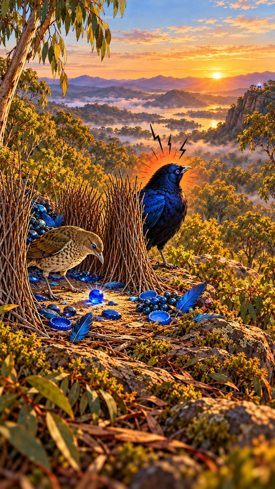
He danced for her, one eye on the ridge. She chose him anyway.
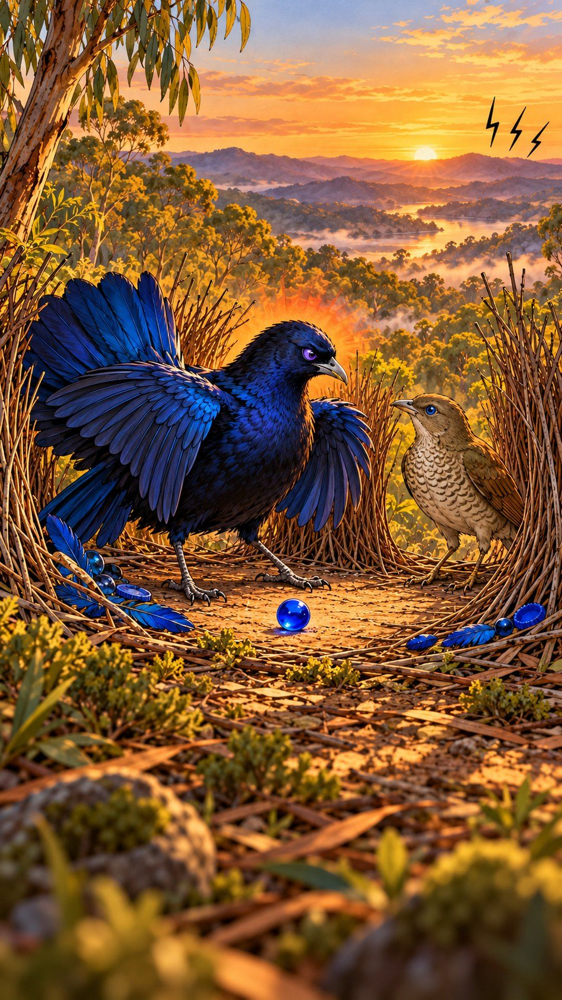
Before she’d even flown off, he was chasing the glint. A puddle. Just sky.
At sunset, the bird with the best of everything sat alone. Next door, Pip was singing.
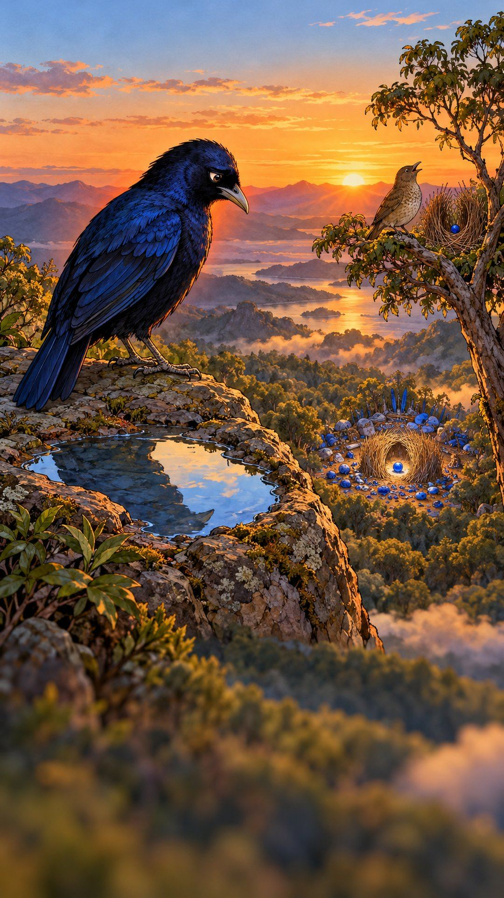
Under his pile of “not quite,” he found his first feather.
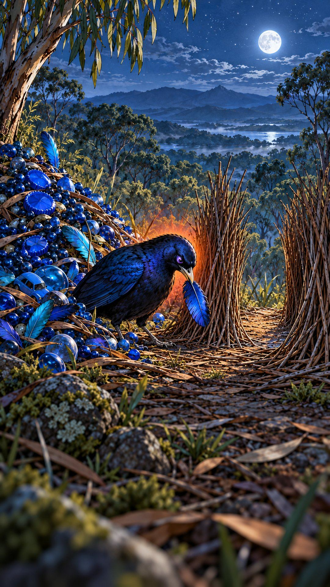
This time, he set it down, and stayed.
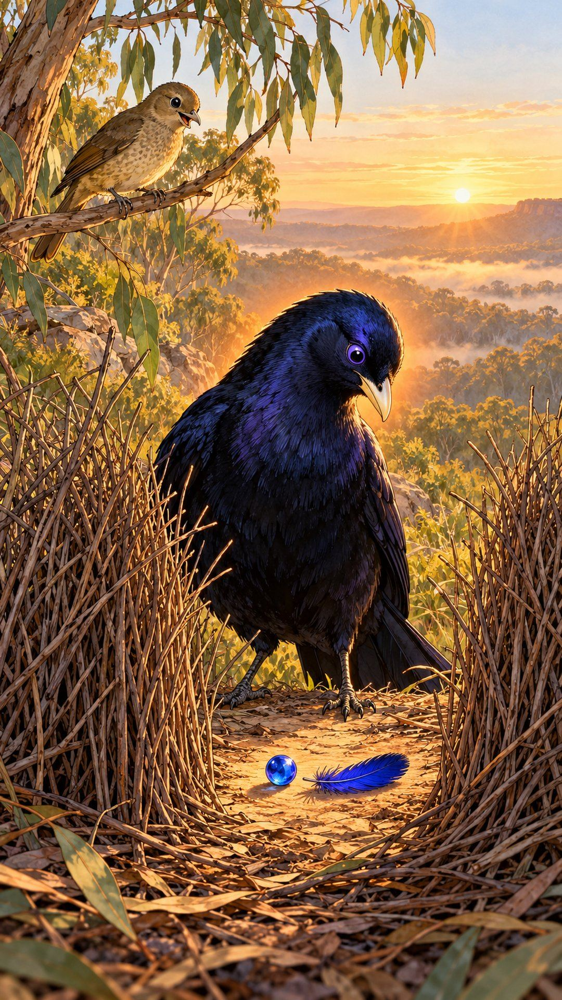
Real life works the same way.
Psychologists call them maximizers: people who keep checking for something better, even after they’ve chosen. One survey found that people high on this scale landed jobs paying about twenty percent more, and were less satisfied with them.
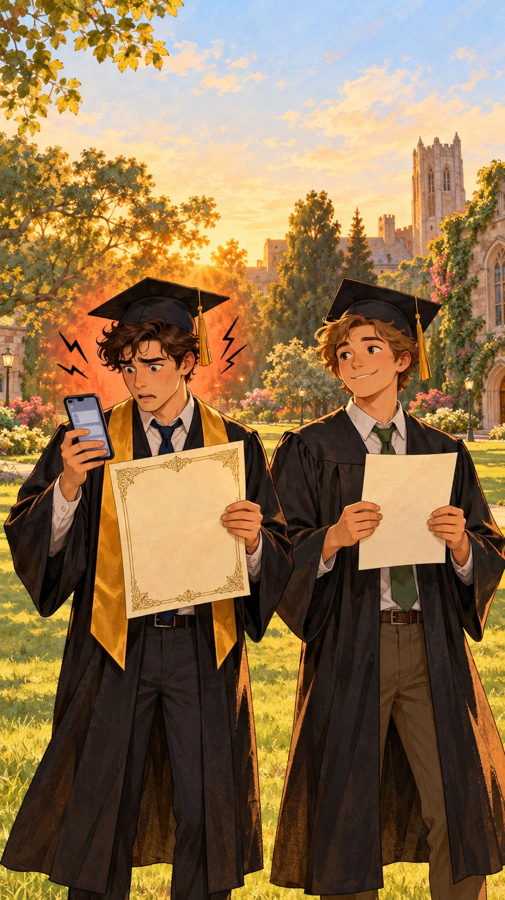
You booked the perfect vacation rental. First night there, you’re still scrolling the ones you didn’t book.
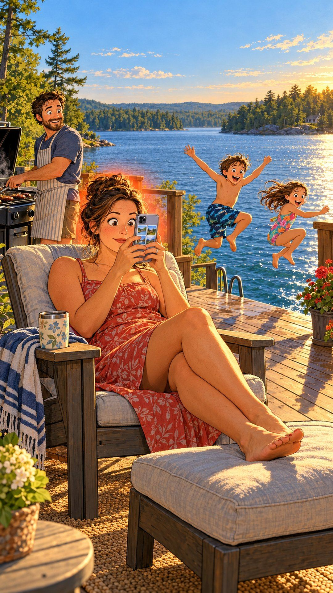
Two hundred reviews for one blender. It arrives, and you’re already eyeing the newer model.
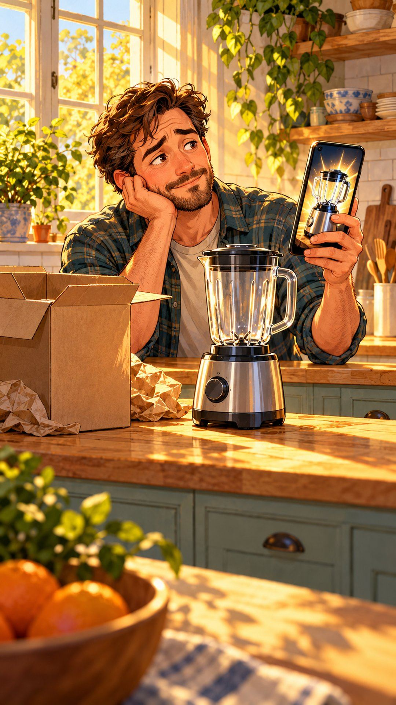
You love your home. You still scroll listings every night.
Wanting the best is smart. Not being able to stop looking isn’t.
A fable based on real research: Schwartz et al., JPSP, 2002; Iyengar, Wells & Schwartz, Psychological Science, 2006 (a survey of graduating seniors; correlational). Characters and events are fictional.